<title>OPC Grapes Chapter</title>
<meta name="claude:viewport-fit-sides" content="cover">
<link rel="preconnect" href="https://fonts.googleapis.com">
<link rel="preconnect" href="https://fonts.gstatic.com" crossorigin>
<link rel="stylesheet" href="https://fonts.googleapis.com/css2?family=Ysabeau:wght@500;600&family=Inter:wght@400;500;600&display=swap">
<style>
  /* One column of rice paper, like the site: the chapter now, then each idea before and after its
     moment. A single light look on purpose (it shows paintings on the site's own paper). */
  :root {
    --paper: #f3efe6;
    --ink: #1b1915;
    --muted: #5c564c;
    --line: #d8d1c3;
    --pick: #6b4a7a;
    --display: "Ysabeau", "Iowan Old Style", Georgia, serif;
    --body: "Inter", system-ui, -apple-system, "Segoe UI", sans-serif;
    color-scheme: light;
  }
  body {
    background: var(--paper);
    color: var(--ink);
    font-family: var(--body);
    font-size: 17px;
    line-height: 1.55;
    padding-left: max(16px, env(safe-area-inset-left, 0px));
    padding-right: max(16px, env(safe-area-inset-right, 0px));
    padding-block: 28px 64px;
  }
  main { max-width: 1080px; margin: 0 auto; display: grid; gap: 48px; }
  h1, h2 { font-family: var(--display); font-weight: 600; line-height: 1.08; text-wrap: balance; margin: 0; }
  h1 { font-size: clamp(34px, 6vw, 56px); }
  h2 { font-size: clamp(24px, 3.2vw, 32px); }
  p { margin: 0; max-width: 62ch; }
  ul { margin: 0; padding-left: 1.2em; display: grid; gap: 4px; max-width: 62ch; }
  .lead { font-size: 19px; }
  .muted { color: var(--muted); font-size: 15px; }
  header { display: grid; gap: 14px; }
  section { display: grid; gap: 14px; padding-top: 24px; border-top: 1px solid var(--line); }
  .pick { color: var(--pick); font-weight: 600; font-size: 15px; letter-spacing: 0.02em; }
  .pair { display: grid; grid-template-columns: minmax(0, 1fr) minmax(0, 1fr); gap: 12px; }
  .phones { display: grid; grid-template-columns: repeat(2, minmax(0, 240px)); gap: 12px; }
  .close { display: grid; grid-template-columns: repeat(2, minmax(0, 320px)); gap: 12px; }
  figure { margin: 0; display: grid; gap: 6px; min-width: 0; align-content: start; }
  figure img { width: 100%; height: auto; display: block; border: 1px solid var(--line); border-radius: 6px; background: #fff; }
  figcaption { font-size: 14px; color: var(--muted); }
  .reply { padding: 18px 20px; border: 1.5px solid var(--ink); border-radius: 12px; display: grid; gap: 8px; }
  @media (max-width: 640px) { .pair { grid-template-columns: minmax(0, 1fr); } }
</style>

<main>
  <header>
    <p class="muted">BiGH website · Advanced OPC Formula, part 5 · November 17, 2026</p>
    <h1>The grapes chapter</h1>
    <p class="lead">“A balance worth keeping.” is the first chapter after OPC’s new vineyard. Its grapes are still grey ink, and their gold sits in a yellow haze: a glow, which your rule since October rules out. Two new paintings, both in the site’s California color. The words stay the same.</p>
    <p class="muted">Each idea is shown on the live page: before its moment, and after. The moment is the chapter’s own: as you scroll to it, the new color spreads through the painting once.</p>
  </header>

  <section aria-labelledby="built">
    <p class="pick">You picked B · built, not live yet</p>
    <h2 id="built">B as built</h2>
    <ul>
      <li><strong>Bigger seeds:</strong> the cut grape is painted larger, lying in front, so the seeds read on a computer.</li>
      <li><strong>Plain gold:</strong> the site’s moving band of light is off here. On a phone it sat on the seeds while you read and washed them pale.</li>
      <li><strong>Words:</strong> unchanged.</li>
    </ul>
    <div class="pair">
      <figure>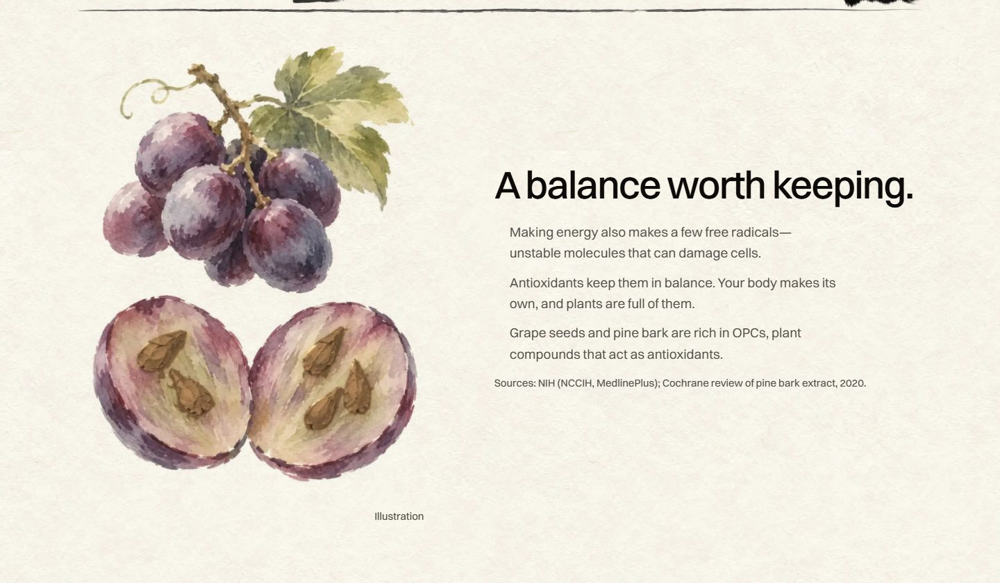<figcaption>Before the moment</figcaption></figure>
      <figure>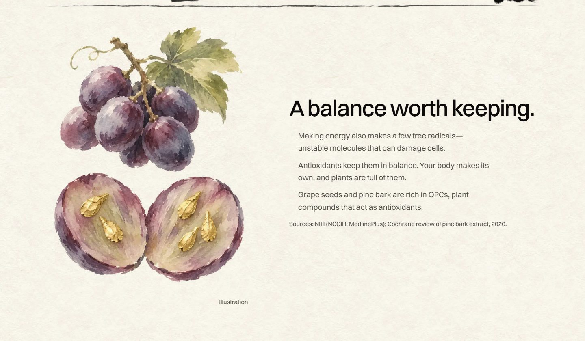<figcaption>After</figcaption></figure>
    </div>
    <div class="close">
      <figure>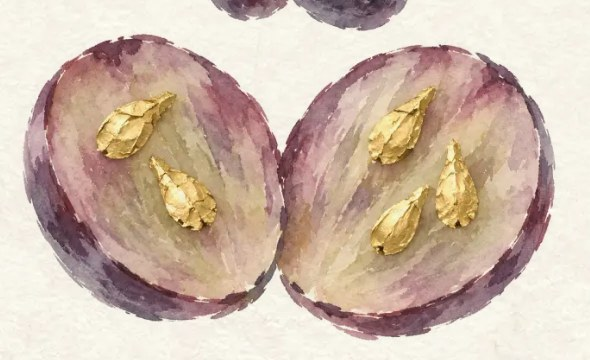<figcaption>Close up, on a phone</figcaption></figure>
    </div>
    <div class="phones">
      <figure>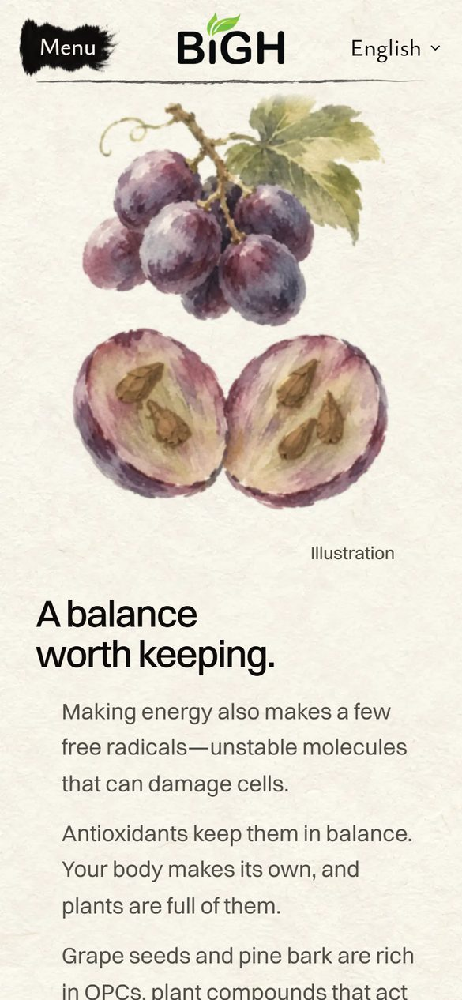<figcaption>Phone, before</figcaption></figure>
      <figure>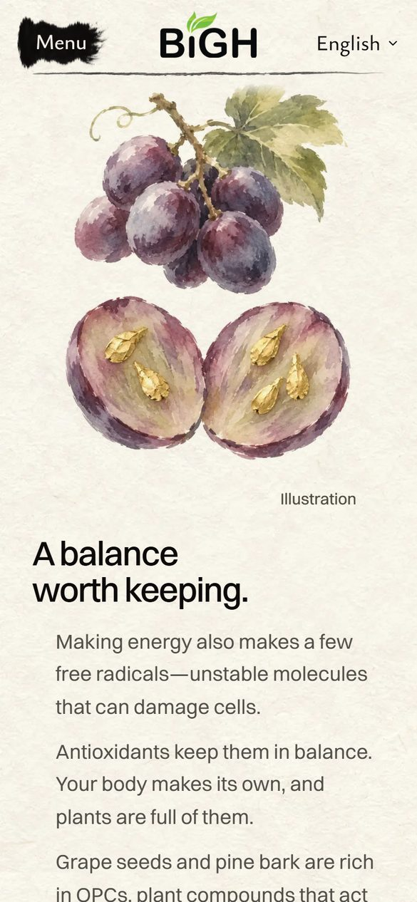<figcaption>Phone, after</figcaption></figure>
    </div>
  </section>

  <section aria-labelledby="now">
    <h2 id="now">Now (live)</h2>
    <p>Grey ink grapes, lit gold from inside, with a yellow haze around them.</p>
    <div class="pair">
      <figure>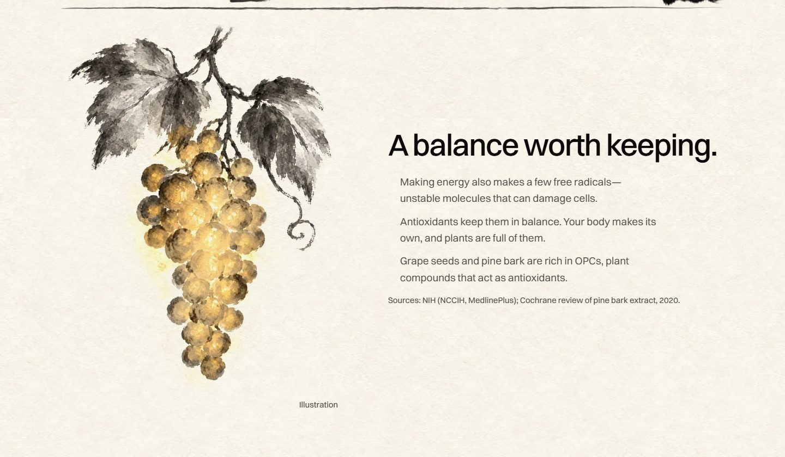<figcaption>Computer</figcaption></figure>
      <figure>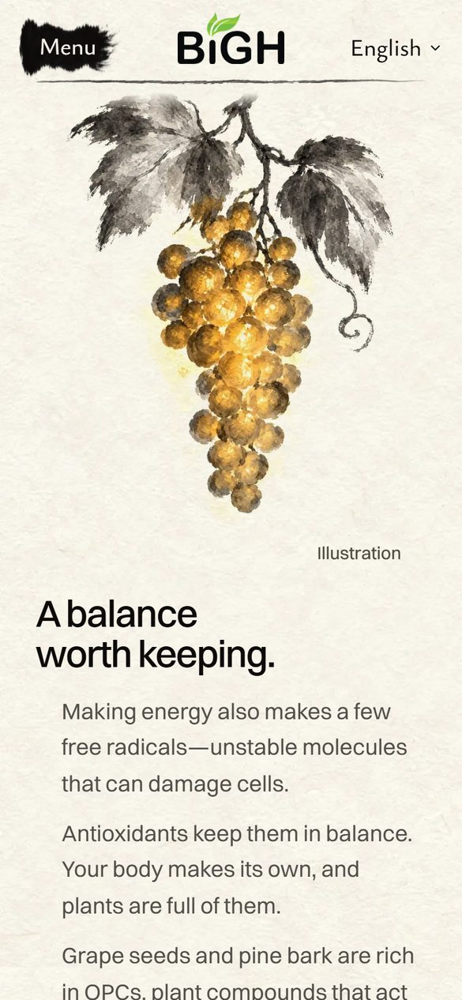<figcaption>Phone</figcaption></figure>
    </div>
  </section>

  <section aria-labelledby="a">
    <h2 id="a">A · The grapes ripen</h2>
    <ul>
      <li><strong>What you see:</strong> one big bunch on its vine, a leaf turning yellow.</li>
      <li><strong>The moment:</strong> the green grapes ripen to deep violet as you arrive.</li>
      <li><strong>Gold:</strong> none.</li>
    </ul>
    <div class="pair">
      <figure>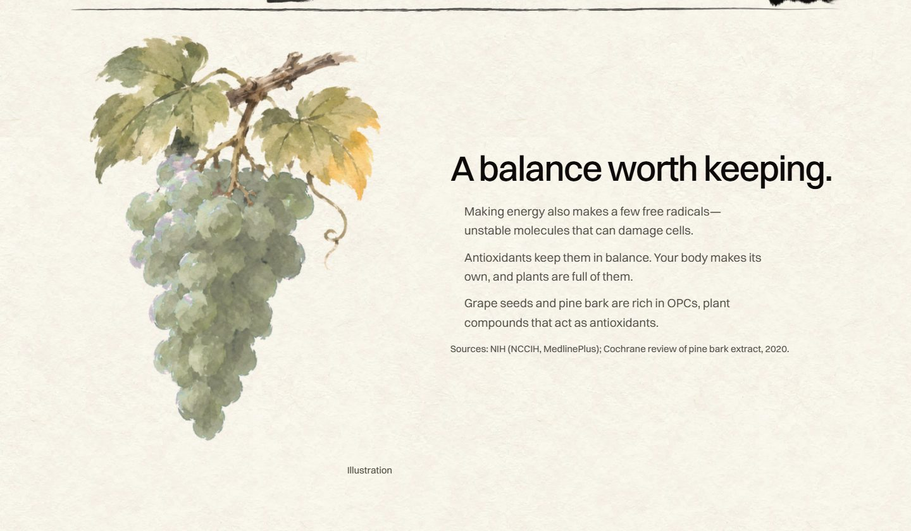<figcaption>Before the moment</figcaption></figure>
      <figure>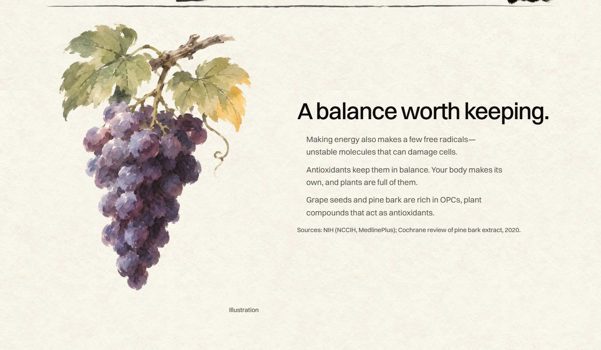<figcaption>After</figcaption></figure>
    </div>
    <div class="phones">
      <figure>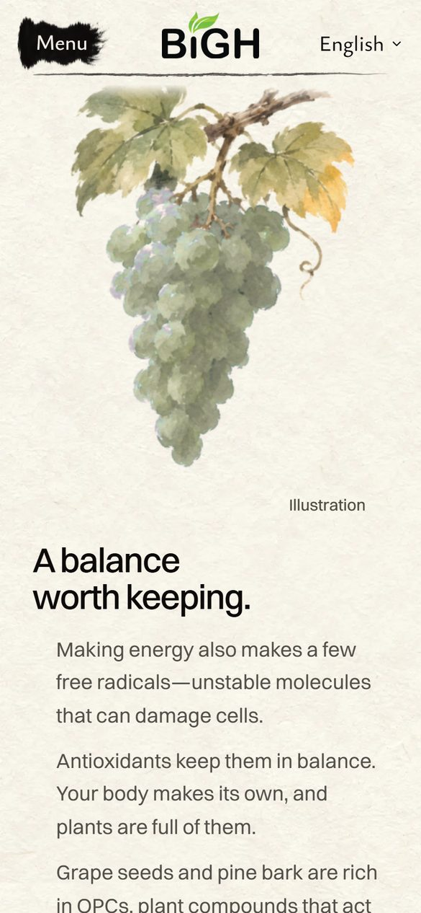<figcaption>Phone, before</figcaption></figure>
      <figure>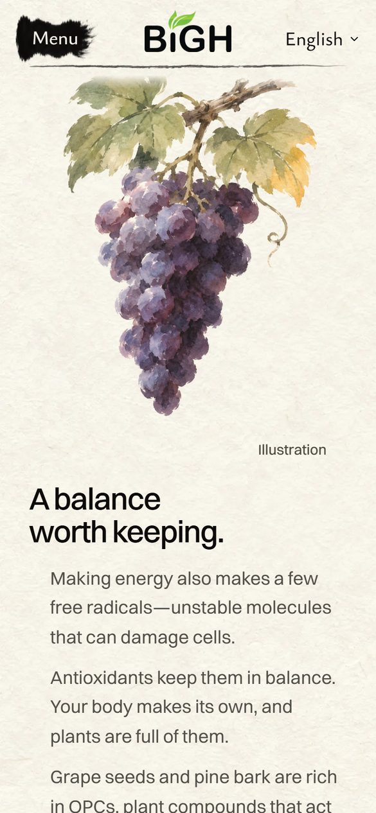<figcaption>Phone, after</figcaption></figure>
    </div>
  </section>

  <section aria-labelledby="b">
    <p class="pick">Claude’s pick</p>
    <h2 id="b">B · The gold is in the seeds</h2>
    <ul>
      <li><strong>What you see:</strong> a few grapes up close, and one grape cut in half.</li>
      <li><strong>The moment:</strong> its plain brown seeds turn to gold leaf as you arrive.</li>
      <li><strong>Why it’s my pick:</strong> it shows what the words say. OPCs come from grape seeds.</li>
    </ul>
    <div class="pair">
      <figure>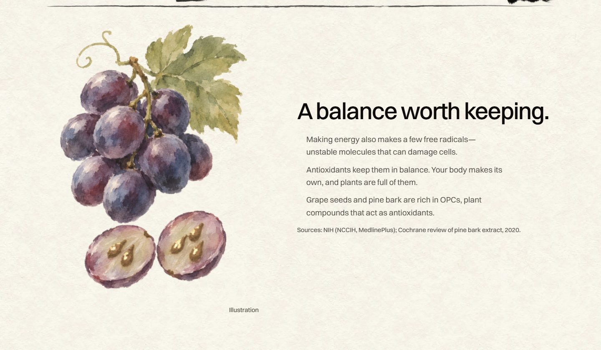<figcaption>Before the moment</figcaption></figure>
      <figure>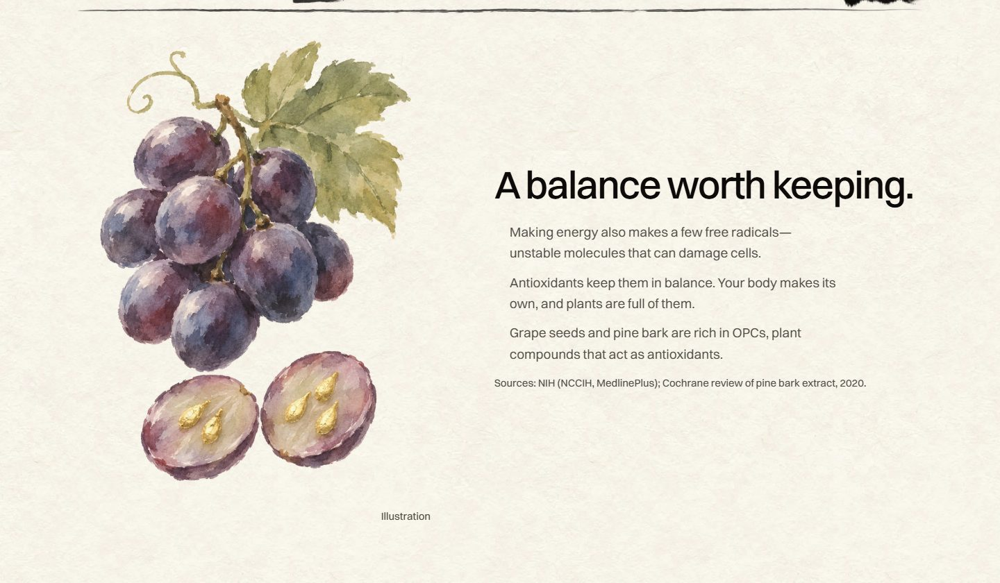<figcaption>After</figcaption></figure>
    </div>
    <div class="close">
      <figure>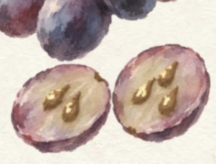<figcaption>Close up, before</figcaption></figure>
      <figure>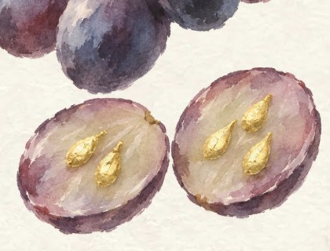<figcaption>Close up, after: flat gold leaf, no glow</figcaption></figure>
    </div>
    <div class="phones">
      <figure>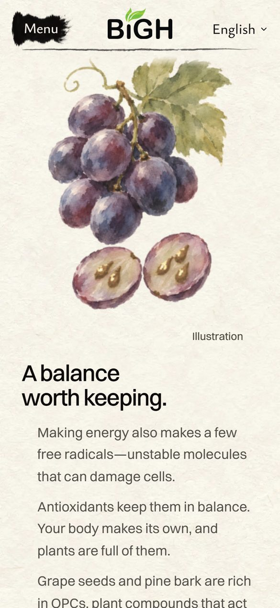<figcaption>Phone, before</figcaption></figure>
      <figure>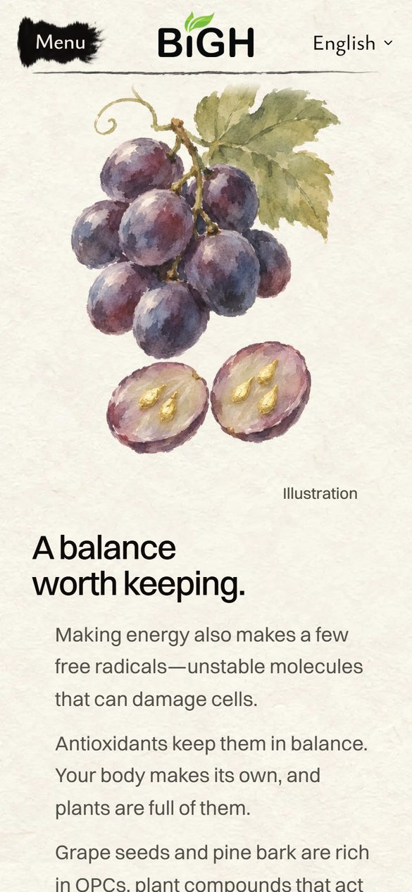<figcaption>Phone, after</figcaption></figure>
    </div>
    <p class="muted">What still holds B back: on a computer the seeds are small (about the size of a word). If you pick B, I’ll set the cut grape a little larger in the painting before building.</p>
  </section>

  <section class="reply" aria-labelledby="reply">
    <h2 id="reply">Your call</h2>
    <p>You picked <strong>B</strong>. Reply <strong>yes</strong> to put it live, or tell me what to change. The next chapter (“What’s inside”, the row of plants) is still grey ink; it comes after this one.</p>
  </section>
</main>
